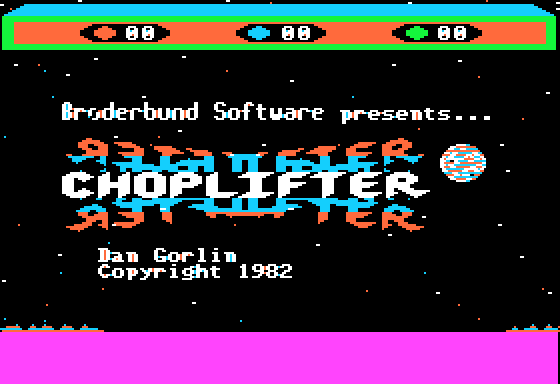
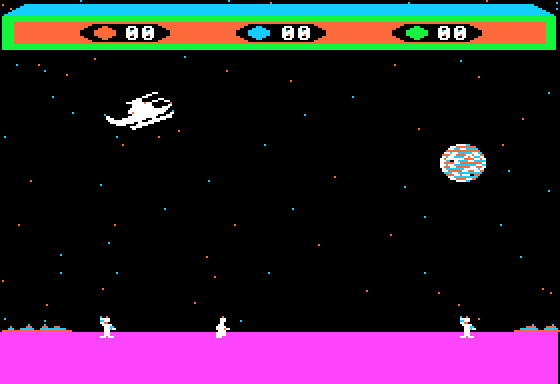

<meta charset="utf-8">
<meta name="viewport" content="width=device-width, initial-scale=1">
<title>Choplifter</title>
<link rel="preconnect" href="https://fonts.googleapis.com">
<link rel="stylesheet" href="https://fonts.googleapis.com/css2?family=Lato:wght@400;700;900&family=IBM+Plex+Mono:wght@400;500&display=swap">
<style>
:root{
  --bg:#23262d; --paper:#e9e7e1; --surface:#ffffff; --surface-2:#f1efea; --line:#d5d3cc; --line-soft:#e0ded8;
  --ink:#2f3136; --ink-soft:#55585f; --ink-mute:#80838a;
  --link:#1f5fa8; --link-hover:#154480; --accent:#1f5fa8;
  --amber:#c25a00; --cyan:#1f5fa8; --coral:#d04a3a; --green:#2a8a4a; --violet:#4a5bd6; --hl:#fff0c2;
  --chip:#2f3136; --chip-ink:#ffffff;
  --c64blue:#40318d; --c64grey:#686868;
  --fd:'Lato',system-ui,sans-serif; --fb:'Lato',system-ui,sans-serif; --fm:'IBM Plex Mono',ui-monospace,Menlo,monospace;
  --col:1080px; --gx:68px; --fs:17px; --lh:1.6; --hw:900; --h1:46px; --h2:26px; --sy:48px; --pp:26px; --r:10px;
  --plate-shadow:0 1px 2px rgba(0,0,0,.05),0 4px 14px rgba(0,0,0,.05);
}
*{box-sizing:border-box}
html{background:var(--bg);min-height:100%}
body{background:var(--paper);color:var(--ink);font-family:var(--fb);font-size:var(--fs);line-height:var(--lh);max-width:var(--col);margin:0 auto;min-height:100vh;padding:0 0 4rem}
h1,h2,h3{font-weight:var(--hw);letter-spacing:-.01em;text-wrap:balance;color:var(--ink);margin:0}
.wrap{padding:0 var(--gx)}
.hero{padding:48px var(--gx) 8px;text-align:left}
.eyebrow{font-family:var(--fm);font-size:12px;letter-spacing:.08em;text-transform:uppercase;color:var(--ink-mute);margin:0 0 10px}
.hero h1{font-size:var(--h1);line-height:1.15;letter-spacing:-.02em;margin:0 0 14px}
.hero .sub{margin:0 0 .6em;color:var(--ink-soft)}
section{padding:var(--sy) 0 24px}
section:last-of-type{border-bottom:none}
.fig{font-family:var(--fm);font-size:12px;letter-spacing:.08em;text-transform:uppercase;color:var(--ink-mute);margin:0 0 10px}
h2.t{font-size:var(--h2);margin-bottom:12px}
.lede{color:var(--ink-soft);margin:0 0 30px}
.plate{background:var(--surface);border:1px solid var(--line);border-radius:var(--r);padding:var(--pp);box-shadow:var(--plate-shadow)}
.cap{font-size:14px;color:var(--ink-mute);margin-top:14px;line-height:1.55}
.cap b{color:var(--ink);font-weight:700}
code{font-family:var(--fm);font-size:.82em;background:var(--chip);color:var(--chip-ink);border-radius:4px;padding:2px 6px;white-space:nowrap}

.ch-pair{display:grid;grid-template-columns:1fr 1fr;gap:18px;align-items:start}
.ch-pair img,.ch-screen{width:100%;display:block;border-radius:4px;image-rendering:pixelated;background:#000}
.ch-bar{display:flex;flex-wrap:wrap;gap:8px;align-items:center;margin:0 0 12px}
.ch-bar button{font:inherit;font-size:13px;padding:5px 11px;border:1px solid var(--line);background:var(--surface-2);color:var(--ink);border-radius:6px;cursor:pointer}
.ch-bar button.on{background:var(--ink);color:#fff;border-color:var(--ink)}
.ch-bar label{font-size:13px;color:var(--ink-soft);display:flex;gap:6px;align-items:center}
.ch-bar input[type=range]{width:200px}
.ch-stat{font-family:var(--fm);font-size:12px;color:var(--ink-mute);margin-left:auto}
.ch-tbl{border-collapse:collapse;font-size:14px;width:100%}
.ch-tbl th,.ch-tbl td{border-bottom:1px solid var(--line-soft);padding:6px 8px;text-align:left;vertical-align:top}
.ch-tbl th{font-weight:700;color:var(--ink-soft);font-size:13px}
.ch-tbl td.n{font-family:var(--fm);text-align:right}
.ch-tbl tr.on td{background:var(--hl)}
.ch-scroll{overflow-x:auto}
.ch-note{font-size:14px;color:var(--ink-soft)}
.ch-land{display:flex;gap:4px;align-items:flex-end;height:120px;margin:8px 0 0}
.ch-land div{flex:1;background:var(--violet);border-radius:3px 3px 0 0;position:relative;opacity:.45}
.ch-land div.on{opacity:1}
.ch-land span{position:absolute;top:-18px;left:0;right:0;text-align:center;font-family:var(--fm);font-size:11px;color:var(--ink-soft)}
.ch-axis{display:flex;gap:4px;font-family:var(--fm);font-size:11px;color:var(--ink-mute)}
.ch-axis span{flex:1;text-align:center}
.ch-sound{background:#111;border-radius:6px;padding:8px 10px;color:#ddd}
.ch-err{color:var(--coral);font-size:14px}
@media (max-width:760px){:root{--gx:16px;--pp:14px}.ch-pair{grid-template-columns:1fr}.ch-stat{margin-left:0}}
</style>
<!-- tabs -->
<header class="hero">
  <p class="eyebrow">1982 · Broderbund Software · Apple II</p>
  <h1>Choplifter</h1>
  <p class="sub">One loop draws every shape of Choplifter onto the hi-res page the player is not looking at, then shows it, about twelve times a second. Each sound is the speaker clicked from a delay loop. The Commodore 64 version follows this code closely enough to carry the same bug: the tanks meant to appear on the helicopter's right are put at the far left end of the world.</p>
</header>
<main class="wrap">

<section id="game">
  <p class="fig">01 · The game</p>
  <h2 class="t">The game</h2>
  <p>The player flies a rescue helicopter out of a base on the right of a long, scrolling landscape. Sixty-four hostages are held in four barracks to the left, behind a fence. The helicopter shoots a barracks open, lands beside the hostages who run out, and carries up to sixteen at a time back to the base, where they climb out and walk to the post office.</p>
  <p>Tanks fire shells that kill hostages and a helicopter on the ground, jets fire missiles at it in the air, and at the higher levels drones home in on it. The player has three helicopters, called sorties. The game ends when all 64 hostages are rescued or killed, or when the third helicopter is lost.</p>
  <div class="plate">
    <div class="ch-pair">
      
      
    </div>
    <p class="cap">The title screen, and hostages running to the helicopter on the first sortie. Apple2TS 3.7.0 as an Apple II Plus, from the original disk (<code>reference/</code>).</p>
  </div>
</section>

<section id="demo">
  <p class="fig">02 · One frame, rebuilt from memory</p>
  <h2 class="t">The demonstration flight, run from the listing</h2>
  <p class="lede">With nothing pressed after the title, the game flies a demonstration sortie. Below, the game's own code from the Source tab runs that sortie in the browser, and each frame is drawn from the two screen pages in memory.</p>
  <div class="plate">
    <div class="ch-bar">
      <button type="button" id="dm-play">▶ Play</button>
      <button type="button" id="dm-step">Next frame</button>
      <button type="button" id="dm-reset">From the start</button>
      <label><input type="checkbox" id="dm-diff"> Show what each frame redrew</label>
      <span class="ch-stat" id="dm-stat">loading the listing</span>
    </div>
    <canvas id="dm-cv" class="ch-screen" width="560" height="384"></canvas>
    <p class="cap">The game's code runs from <code>start</code> (<code>$0800</code>) on the kit's 6502 over the listing's bytes, and stops at each call of <code>gfx_show_page</code> (<code>$12E3</code>); the page it is about to show is drawn by the site's Apple II library (<code>reference/demo.js</code>). The run starts from both screen pages as the disk loads them, the loading screen, because the listing leaves the screen out and the attract mode never redraws the counters' bar or the ground band. <b>At frames 1, 2, 40, 200, 400 and 800, both pages hold the same 16,384 bytes as in Apple2TS</b> at the same call, run from the loader's hand-over (<code>test_demo.js</code>). The highlight marks every byte that differs from the last time the same page was shown, two frames earlier.</p>
  </div>
  <p>The game never clears the screen. It draws on one page while the other is shown, and every shape it draws leaves a box in that page's erase list (<code>add_erase</code>, <code>$7BF8</code>). Two frames later, when the same page comes round again, <code>erase_old</code> (<code>$9B4C</code>) fills each recorded box with black above the ground line and with the ground's colour below it, and the frame is drawn again on top. The highlight shows that work: the shapes that move and the stars that twinkle are put back each frame, and the rest of the screen is left as it was.</p>
  <p>The planet is not a shape. <code>draw_planet</code> (<code>$9411</code>) is 66 pairs of <code>LDA #</code> and <code>STA</code> a page that store its bytes straight into screen memory, so the picture lives in the code. The fourteen star bytes are stored at fixed places (<code>store_stars1</code>, <code>$972D</code>) and remade every frame from two random numbers, which makes the sky twinkle.</p>
</section>

<section id="sound">
  <p class="fig">03 · Sound</p>
  <h2 class="t">Sound: every effect is the speaker clicked by a delay loop</h2>
  <p class="lede">The Apple II's speaker makes a click each time the program touches <code>$C030</code>, and a tone is clicks at a steady spacing. Choplifter makes all of its sounds that way, from three routines, and there is no engine sound and no music.</p>
  <div class="plate">
    <div class="ch-sound" id="snd"><span class="ch-err" id="snd-msg">Loading the listing…</span></div>
    <p class="cap">Each button runs the code that makes that effect in the game, from the listing, on the kit's 6502, and plays the clicks it makes through the site's model of the speaker (<code>site/lib/apple2-speaker.js</code>); the drawing shows each note's pitch and, along the foot, every click. <b>The same code run in Apple2TS clicks at the same spacings, click for click, for all nine effects</b> (<code>test_sound.js</code>). The noise of a tank or a jet firing takes its delays from the bytes of the jet's own code at <code>$8101</code> onwards (<a href="discoveries.html">Discoveries</a>).</p>
  </div>
  <p><code>tone</code> (<code>$7370</code>) clicks the speaker Y times, waiting X turns of a delay loop between clicks and adding A to X after each. A turn is five cycles, so a tone of period X has its clicks 5X + 30 cycles apart and sounds at 1,020,484 / (2 × (5X + 30)) Hz. <code>noise</code> (<code>$7373</code>) clicks in pairs, and <code>click</code> (<code>$736D</code>) clicks once. Every click is followed by a read of <code>$C020</code>, the cassette output, so a speaker plugged into the cassette socket plays the same sound.</p>
  <div class="ch-scroll"><table class="ch-tbl">
    <tr><th>Effect</th><th>Code</th><th>What it plays</th></tr>
    <tr><td>A new game</td><td><code>$0B7C</code></td><td>three phrases of three notes: periods 144, 67, 97 (680, 1,398 and 991 Hz), then 112, 67, 97, then 80, 67, 97</td></tr>
    <tr><td>A shot</td><td><code>$0E36</code></td><td>a falling tone, period 48, one longer after each of 32 clicks</td></tr>
    <tr><td>A hostage climbs in</td><td><code>$61E1</code></td><td>three notes, periods 255, 224 and 152, once a frame at most</td></tr>
    <tr><td>A hostage killed</td><td><code>$79F0</code></td><td>three notes, periods 48, 67 and 97, once a frame at most</td></tr>
    <tr><td>A hostage home</td><td><code>$7A30</code></td><td>one note, period 40</td></tr>
    <tr><td>A helicopter lost with hostages aboard</td><td><code>$7A6B</code></td><td>four falling notes, periods 64, 84, 97 and 131</td></tr>
    <tr><td>A tank fires, a jet fires</td><td><code>$686B</code>, <code>$8BEC</code></td><td>noise</td></tr>
    <tr><td>A drone drops a shell</td><td><code>$8DDB</code></td><td>a steady tone, period 48</td></tr>
  </table></div>
  <p class="ch-note">Every sound routine first checks that a game is on and the sound is on (CTRL-S switches it), so the title and the demonstration are silent.</p>
</section>

<section id="flight">
  <p class="fig">04 · The helicopter</p>
  <h2 class="t">A tilted helicopter lands higher, on one side</h2>
  <p>The stick leans the helicopter, a step a frame, and the lean sets the thrust: 0, 96, 180, 264, 348 or 420 256ths of a dot a frame (<code>thrust_table</code>, <code>$7418</code>). Each frame a sixteenth of the speed is taken off as drag, so the top speed is 21 dots a frame. Up and down, the speed closes by half the difference a frame on the stick's climb rate, one of sixteen from -10 to +6 dots a frame (<code>climb_table</code>, <code>$7424</code>).</p>
  <p>A helicopter touches the ground at a height that depends on its tilt (<code>land_height_table</code>, <code>$7895</code>). The table is read by the tilt taken the way the helicopter faces, so leaning one way it stands up to three rows higher on its skids, and leaning the other way it lands at the level height until the two steepest tilts.</p>
  <div class="plate">
    <div class="ch-bar"><label>Tilt <input type="range" id="ld-tilt" min="-5" max="5" value="0"></label><span class="ch-stat" id="ld-stat"></span></div>
    <div class="ch-land" id="ld-bars"></div>
    <div class="ch-axis" id="ld-axis"></div>
    <p class="cap">The eleven landing heights, read from <code>$7895</code> in the listing (two bytes each, the high byte 0). The tilt is negated for a helicopter facing the other way (<code>$7720</code>). Only a level helicopter opens its door (<code>door_open</code>, <code>$0D</code>), so a tilted landing neither picks up nor crushes anyone.</p>
  </div>
  <p>On the ground and level, the door opens and the hostages come. One that reaches 8 or 9 dots right of the helicopter's X, or 10 or 11 dots left, climbs in, up to sixteen aboard (<code>boarding</code>, <code>$6139</code>). One that is closer, from 7 dots right to 9 dots left, is under the helicopter and is crushed (<code>crush</code>, <code>$62D7</code>). Coming down at more than about 4.4 dots a frame bounces the helicopter, and touching the ground at full speed crashes it.</p>
</section>

<section id="enemies">
  <p class="fig">05 · Enemies</p>
  <h2 class="t">The level goes up with each trip home</h2>
  <p>The level starts each game at 0 and goes up by one, to 3 at most, the first time a hostage is set down at the base after a pickup (<code>trip_flag</code>, <code>$731E</code>). Eight frames in every 256 an enemy may come (<code>spawn</code>, <code>$6884</code>): at level 0 only tanks; at level 1 a jet half the time, otherwise a tank; at levels 2 and 3 a drone one time in four, otherwise a jet half the time, otherwise a tank. Each kind comes only while fewer than its most are in play.</p>
  <div class="plate">
    <div class="ch-bar" id="lv-btns"></div>
    <div class="ch-scroll"><table class="ch-tbl" id="lv-tbl"></table></div>
    <p class="cap">The most of each kind in play, read from <code>max_tanks</code> (<code>$68D9</code>), <code>max_jets</code> (<code>$68DD</code>) and <code>max_drones</code> (<code>$68E1</code>) in the listing, and the share of jets that are bold from <code>bold_masks</code> (<code>$6536</code>). In Apple2TS the most of each kind seen at each level matched the table (<code>facts.md</code>, "Live tests").</p>
  </div>
  <p>Tanks drive towards the helicopter until they are 128 dots away, then decide every 8 to 23 frames: fire if the helicopter is inside the arc of the gun's aim, and stop, come on or back off (<code>tank_impl</code>, <code>$65C3</code>). The gun turns a step a frame towards the helicopter, through five aims. Only a blast in front of the ground's depth destroys a tank, and only a shot fired while the helicopter faces the viewer or is turning comes forward as it falls, so a side-on shot never reaches one.</p>
  <p>Jets follow scripts of four-byte steps, each a picture and the steps in X, height and depth: a cruise, a turn towards the viewer, a pass coming forward, and the attack run, with missiles at a helicopter in the air and a bomb at one on the ground (<code>jet_scripts</code>, <code>$8262</code>). Drones turn their speed a dot a frame towards the helicopter and close on its height; one that touches it destroys it, and at level 3 they drop shells (<code>drone</code>, <code>$8C42</code>).</p>
</section>

<section id="controls">
  <p class="fig">06 · Controls</p>
  <h2 class="t">Controls</h2>
  <p>The joystick is two paddles read through the Monitor ROM's <code>PREAD</code>. Up and down is sixteen steps of climb rate (<code>read_stick_y</code>, <code>$7663</code>); left and right is eleven steps of lean, -5 to +5, with a dead band at each end (<code>read_stick_x</code>, <code>$769C</code>). Button 0 fires, one shot a press and at most five in flight (<code>fire</code>, <code>$0E0F</code>). Button 1 turns: a short press brings a side-on helicopter round to face the viewer, and a press held until the turn has passed the front carries it on to face the other way (<code>turn_button</code>, <code>$0E3B</code>).</p>
  <div class="ch-scroll"><table class="ch-tbl">
    <tr><th>Key</th><th>What it does</th></tr>
    <tr><td>ESC</td><td>pause, until a second ESC</td></tr>
    <tr><td>CTRL-S</td><td>sound off and on</td></tr>
    <tr><td>CTRL-V</td><td>up and down reversed</td></tr>
    <tr><td>CTRL-A</td><td>left and right reversed</td></tr>
    <tr><td>CTRL-L, then a key</td><td>the level set to the key's low two bits (<a href="discoveries.html">Discoveries</a>)</td></tr>
    <tr><td>any other key</td><td>a new game, from the title or the demonstration</td></tr>
  </table></div>
  <p class="cap">The keys are read by <code>read_keys</code> (<code>$0D92</code>).</p>
</section>

<section id="c64">
  <p class="fig">07 · The Commodore 64 version</p>
  <h2 class="t">The C64 version is the same program, rewritten</h2>
  <p>The <a href="../../c64/choplifter/index.html">Commodore 64 cartridge</a> keeps this game's design down to its numbers: the same object types, the jets' four-byte script steps, the arguments written inline after a call, the crushing and boarding distances, the random gap between hostages, and the slip that loses the tanks meant for the helicopter's right. It changes what the machine changes, and a few of the numbers.</p>
  <div class="ch-scroll"><table class="ch-tbl">
    <tr><th></th><th>Apple II (1982 disk)</th><th>Commodore 64 (cartridge)</th></tr>
    <tr><td>The screen</td><td>hi-res, two pages flipped, 280 dots across</td><td>multicolour bitmap, two screens flipped, no sprites</td></tr>
    <tr><td>The loop</td><td>no interrupts; about 12 frames a second in play</td><td>a raster interrupt for timers; about 21 passes a second</td></tr>
    <tr><td>Sound</td><td>the speaker: nine effects, no engine sound</td><td>the SID: two noise voices for the engine, a third for effects</td></tr>
    <tr><td>Fire and turn</td><td>button 0 fires, button 1 turns</td><td>one button: a tap fires, a hold turns</td></tr>
    <tr><td>Barracks, base</td><td>$0380-$0680, base $1274</td><td>$037D-$067D, base $1254</td></tr>
    <tr><td>Crushed, boarding</td><td>-9 to +7; +8, +9, -10, -11</td><td>-9 to +7; +8, +9, -10, -11</td></tr>
    <tr><td>Hostage gap at the start</td><td>an even 32 to 158 dots</td><td>an even 32 to 158</td></tr>
    <tr><td>Most tanks, levels 0-3</td><td>1, 2, 2, 2</td><td>1, 2, 1, 1</td></tr>
    <tr><td>Most jets, levels 0-3</td><td>0, 1, 2, 2</td><td>0, 1, 2, 2</td></tr>
    <tr><td>Steps in a jet's attack run</td><td>24</td><td>10</td></tr>
    <tr><td>The homing enemy</td><td>drones, up to two at level 3</td><td>one mine at a time</td></tr>
    <tr><td>The level goes up</td><td>at the first unloading after a pickup</td><td>at the first unloading after a pickup</td></tr>
    <tr><td>Tanks meant for the right</td><td>put at the world's far left; dropped unless the helicopter is in its first 128 dots</td><td>put at the world's far left and deleted</td></tr>
  </table></div>
  <p class="cap">The Apple II column is this game's <code>facts.md</code>; the C64 column is the C64 page's <code>facts.md</code>. Both games measure the world in their own units, so positions agree only roughly.</p>
</section>
</main>
<footer style="margin:16px 0 0;padding:22px var(--gx) 0;border-top:1px solid #e0ded8;font-family:'IBM Plex Mono',ui-monospace,Menlo,monospace;font-size:12px;color:#80838a"><a href="https://github.com/gamesexplained/gamesexplained" style="color:#1f5fa8;text-decoration:none">GitHub</a> · <a href="https://discord.gg/3V9GWyRDWV" style="color:#1f5fa8;text-decoration:none">Discord</a><br>© Games Explained contributors. Write-ups, facts and symbol maps are available under <a href="https://creativecommons.org/licenses/by-sa/4.0/" style="color:#1f5fa8;text-decoration:none">CC BY-SA 4.0</a>; code under <a href="https://opensource.org/licenses/MIT" style="color:#1f5fa8;text-decoration:none">MIT</a></footer>
<script src="../../lib/cpu6502.js"></script>
<script src="../../lib/apple2.js"></script>
<script src="../../lib/apple2-speaker.js"></script>
<script src="reference/demo.js"></script>
<script src="reference/sound.js"></script>
<script>
(async function () {
  const $ = id => document.getElementById(id);
  const missing = [['C64Cpu', 'cpu6502.js'], ['Apple2', 'apple2.js'], ['Apple2Speaker', 'apple2-speaker.js'],
    ['ChopDemo', 'reference/demo.js'], ['ChopSound', 'reference/sound.js']].filter(([g]) => !globalThis[g]).map(([, f]) => f);
  const say = msg => { $('dm-stat').textContent = msg; $('snd').innerHTML = '<span class="ch-err">' + msg + '</span>'; };
  if (missing.length) { say('This widget needs the built site (missing: ' + missing.join(', ') + ').'); }

  let L = null;
  if (!missing.length) {
    try { L = await Apple2.load('listing.json'); } catch (e) { say('The listing did not load: ' + e.message); }
  }

  // --- 02: the demonstration -------------------------------------------------------------------
  const cv = $('dm-cv'), ctx = cv.getContext('2d');
  ctx.fillStyle = '#000'; ctx.fillRect(0, 0, cv.width, cv.height);
  if (L) {
    let s, last = { 1: null, 2: null }, shown = null, playing = false, owed = 0, prev = 0, raf = 0;
    const hb = y => Apple2.hiresBase(y);
    function draw(page) {
      Apple2.draw(cv, s.m, null, { hires: true, page2: page === 2 }, 'hires');
      const off = page === 2 ? 0x2000 : 0, was = last[page];
      if ($('dm-diff').checked && was) {
        ctx.fillStyle = 'rgba(255, 220, 0, 0.45)';
        for (let y = 0; y < 192; y++) for (let c = 0; c < 40; c++) {
          const a = hb(y) + off;
          if (s.m[a + c] !== was[a - 0x2000 - off + c]) ctx.fillRect(c * 14, y * 2, 14, 2);
        }
      }
      // keep this page's bytes for the next time it is shown
      const keep = new Uint8Array(0x2000); keep.set(s.m.subarray(0x2000 + off, 0x4000 + off)); last[page] = keep;
      $('dm-stat').textContent = `frame ${s.frame} · page ${page} · ${(s.cpu.cycles / ChopDemo.CLOCK).toFixed(1)} s of the machine's time`;
    }
    function reset() { s = ChopDemo.start(L); last = { 1: null, 2: null }; step(); }
    function step() { shown = ChopDemo.next(s); draw(shown.page); return shown.cycles; }
    function tick(t) {
      if (!playing) return;
      owed += Math.min(250, t - (prev || t)); prev = t;
      // run frames at the machine's own speed: each frame took its cycles at 1,020,484 a second
      while (owed > 0) owed -= step() / ChopDemo.CLOCK * 1000;
      raf = requestAnimationFrame(tick);
    }
    $('dm-play').onclick = () => {
      playing = !playing; $('dm-play').textContent = playing ? '❚❚ Pause' : '▶ Play';
      $('dm-play').classList.toggle('on', playing);
      prev = 0; owed = 0; if (playing) raf = requestAnimationFrame(tick); else cancelAnimationFrame(raf);
    };
    $('dm-step').onclick = () => { if (!playing) step(); };
    $('dm-reset').onclick = () => reset();
    $('dm-diff').onchange = () => { if (!playing && shown) { const p = shown.page; last[p] = last[p]; draw(p); } };
    reset();
  }

  // --- 03: the sound effects ---------------------------------------------------------------------
  if (L) {
    $('snd').innerHTML = '';
    const tunes = ChopSound.EFFECTS.map((e, k) => ({ name: e.name, log: ChopSound.log(L, k) }));
    Apple2Speaker.mount($('snd'), { tunes });
  }

  // --- 04: landing heights -------------------------------------------------------------------------
  const land = [];
  for (let t = -5; t <= 5; t++) land.push(L ? L.ram[0x7895 + 2 * (t + 5)] : [10, 9, 9, 8, 8, 7, 7, 7, 7, 8, 8][t + 5]);
  const bars = $('ld-bars'), axis = $('ld-axis');
  land.forEach((h, i) => {
    const d = document.createElement('div'); d.style.height = (h / 10 * 100) + '%';
    d.innerHTML = '<span>' + h + '</span>'; bars.appendChild(d);
    const a = document.createElement('span'); a.textContent = (i - 5 > 0 ? '+' : '') + (i - 5); axis.appendChild(a);
  });
  function showTilt() {
    const t = +$('ld-tilt').value, h = land[t + 5];
    [...bars.children].forEach((d, i) => d.classList.toggle('on', i === t + 5));
    $('ld-stat').textContent = `tilt ${t > 0 ? '+' : ''}${t}: lands at height ${h}, ${h - land[5]} row${h - land[5] === 1 ? '' : 's'} above level`;
  }
  $('ld-tilt').oninput = showTilt; showTilt();

  // --- 05: enemies by level ------------------------------------------------------------------------
  const rd = (a, i, d) => (L ? L.ram[a + i] : d[i]);
  const bits = v => { let n = 0; for (; v; v &= v - 1) n++; return n; };
  const lvTbl = $('lv-tbl'), lvBtns = $('lv-btns');
  const kinds = [['Tanks', 0x68D9, [1, 2, 2, 2]], ['Jets', 0x68DD, [0, 1, 2, 2]], ['Drones', 0x68E1, [0, 0, 1, 2]]];
  const odds = ['every enemy is a tank', 'a jet half the time, otherwise a tank', 'a drone one time in four, otherwise a jet half the time, otherwise a tank', 'a drone one time in four, otherwise a jet half the time, otherwise a tank'];
  function showLevel(lv) {
    [...lvBtns.children].forEach((b, i) => b.classList.toggle('on', i === lv));
    const bold = rd(0x6536, lv, [0, 0, 0x2C, 0x44]);
    lvTbl.innerHTML = '<tr><th>Kind</th><th>Most in play</th></tr>' +
      kinds.map(([n, a, d]) => `<tr><td>${n}</td><td class="n">${rd(a, lv, d)}</td></tr>`).join('') +
      `<tr><td>What comes</td><td>${odds[lv]}</td></tr>` +
      `<tr><td>Bold jets</td><td>${bold ? 'one in ' + (1 << bits(bold)) + ', which swoop sooner' : 'none'}</td></tr>` +
      `<tr><td>Drones drop shells</td><td>${lv === 3 ? 'yes' : 'no'}</td></tr>`;
  }
  for (let lv = 0; lv < 4; lv++) {
    const b = document.createElement('button'); b.type = 'button'; b.textContent = 'Level ' + lv;
    b.onclick = () => showLevel(lv); lvBtns.appendChild(b);
  }
  showLevel(0);
})();
</script>
